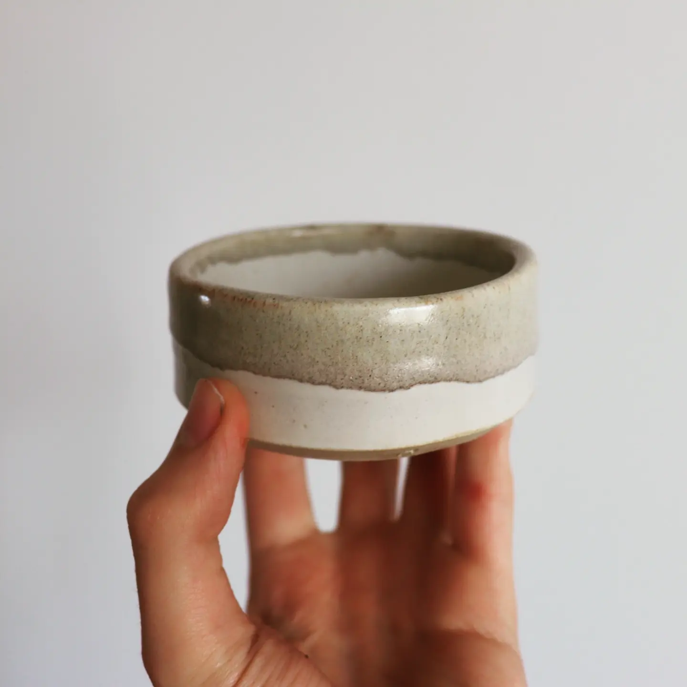
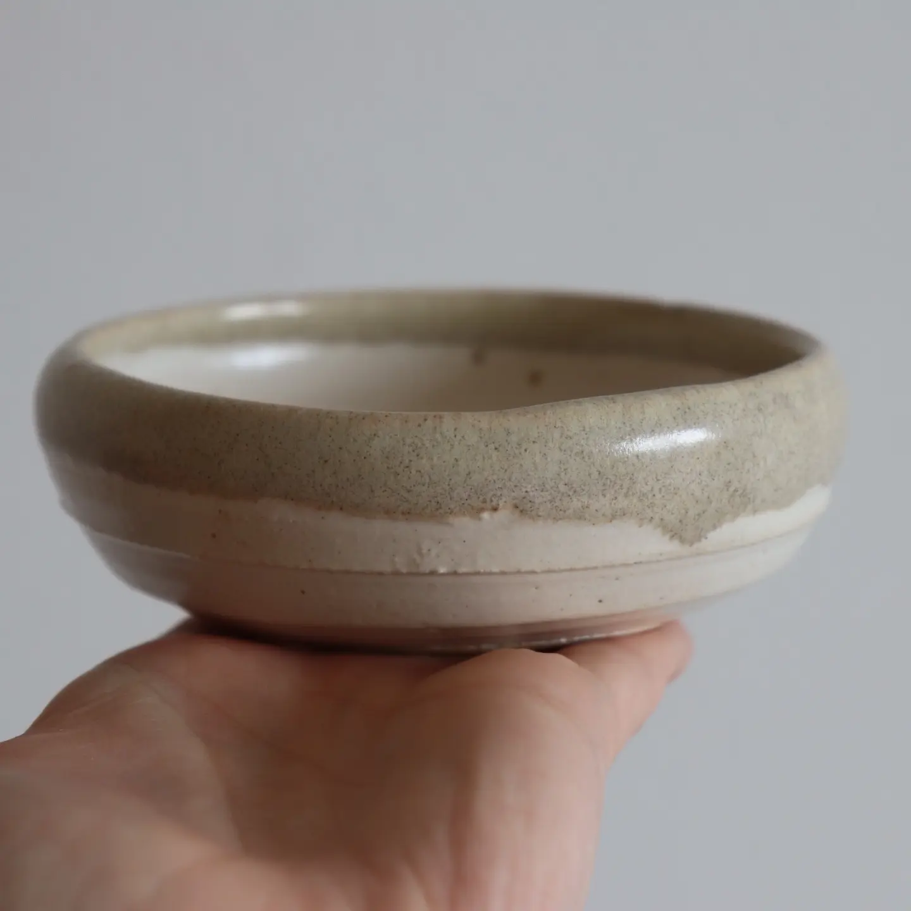

Finished
Lidded Storage Jar
Finished on 2023-04-30
Speckled clay.
Set of 5 Coasters
Finished on 2023-04-16
Speckled clay. My first use of engobe to inscribe the sigils onto these coasters. The sigils themselves were designed via a collaboration with GPT4 to represent human/machinic intelligence and collaboration.
Desert Bowl
Finished on 2023-03-19
Speckled clay. Trying to work on increasing the size of my works, above just cups. Bitten by not using a bat for this one. Still too small for its intended purpose, but makes a cute desert bowl.
Conical Vase
Finished on 2023-01-20
Speckled clay. This was meant to be a storage vessel, but the internal volume was a bit too small and the proportions not quite right. But, it makes for a nice weird vase for vines.
2022
Makers Mark
Finished on 2022-07-24
White clay. Came out ok. But my partner got me a real, machined steel makers mark, so this is just a weird little artifact.
Vase
Finished on 2022-07-24
Speckled clay.
Aeropress Jug
Finished on 2022-07-12
Speckled clay. I finally did it. I finally speared my white whale. I made a jug with a rim the right diameter to fit an aeropress. I can finally sleep.
Espresso Cup & Saucer
Finished on 2022-07-12
Speckled clay.
Espresso Cup & Saucer
Finished on 2022-07-12
Speckled clay. This cup, and its twin, were an experiment in having an entirely unglazed exterior. The interior and saucers were glazed with a single coat of metallic creme which, coupled with the colour of the clay, gaves it an unexpectedly retro vibe. This was also my first bit of handbuilding, as well as handle attachment, which had no complications or cracks. Really happy with these.
Angular Vase
Finished on 2022-06-23
Speckled clay. It seems like the toasted look comes about from exposed clay that isn't close to the bototm. For this, and a few following pieces, I tried a new glaze of a single coat of white, where I then sponged it off at the rim. I like the exposed clay aesthetic quite a lot, and might use it more going forward.
Sake/Tea Cup
Finished on 2022-06-23
Speckled clay. I really flubbed glazing this one. The glaze inside is clumpy and weird and theres a big fingerprint on the outside. It's kinda cute in its own, unintentional way.

Large Cup
Finished on 2022-06-23
Speckled clay.

Large Cup
Finished on 2022-06-23
Speckled clay.
Storage Bowl
Finished on 2022-06-23
Speckled clay. This is a food portion bowl for Sophia. Luckily enough, a full bowl is more or less her exact allowance for a meal.

Cup
Finished on 2022-06-23
Speckled clay.

Small Jug
Finished on 2022-06-23
Speckled clay. Yet another jug that ended up being slightly too narrow to use for an aeropress.

Small Vase
Finished on 2022-06-23
Speckled clay. The proportions of this are a little weird in a way I don't like. I think with something leafy that hides it, like epipremnum aureum, it will look okay.
Cup
Finished on 2022-06-18
Speckled clay. The boundary at the bottom between the edge of the glaze and the clay has a nice, toasted look to it, and I have no idea how I did it.

Side Dish Plate
Finished on 2022-05-31
White clay.

Small Milk Jug
Finished on 2022-05-31
Speckled clay. It was supposed to be a large jug/cup for doing aeropress into. It was too small. It is now a milk jug.

Coffee Cup
Finished on 2022-05-31
Speckled clay. Made for a friend.

Small Cup
Finished on 2022-05-23
White clay. Also a result of my first solo, non-class batch of thrown pottery.

Small Bowl
Finished on 2022-05-23
White clay. A result of my first solo, non-class batch of thrown pottery.

Small Bowl
Finished on 2022-04-24
White clay. My first finished thrown piece. Result of a wheel throwing class at Ceramic Kingdom